Intel PXE Network Configuration Task
As a System Engineer working for Supermicro, I was tasked to service one of our customers, Intel, in changing some of the network configuration of one of their PXE servers, which is used to test up to 100 of their broken Data center Systems. I was tasked with the following:
- Give the PXE server a new static IP (approved by Intel): 192.168.1.160
- Remove any previous IP leases that the PXE server previously gave.
- Give the IP to the correct interface they intend to use for this server: enp76s0f0
- Put all other interfaces down. Flush their IPs if they have any.
- Start / Enable DHCP, so that other servers can connect to the PXE server and get the new IP.
- Expand the IP leases from 50 to 200 (inclusive with the PXE's own IP).
- Test that other servers can boot to the PXE server.
To start, we see that PXE server in its previous network configuration, had already given 27 IPs:
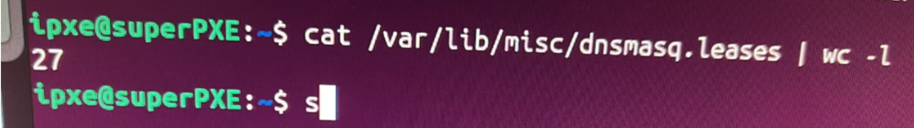
We make sure that DHCP is disabled:
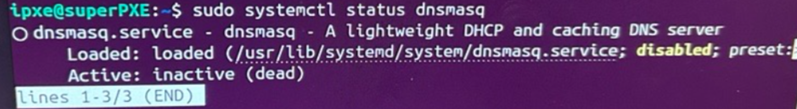
Looking at the current network configuration, we see that only enxbe3af2b6059f has an IP starting with 169.254, indicating that very likely, this system had issues communicating with DHCP:
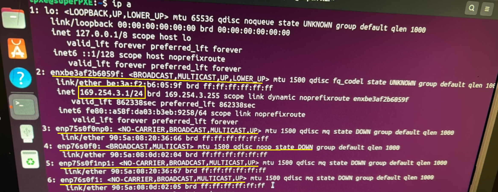
Hostname -I shows the only IP assigned to the host (again, its the 169 IP):
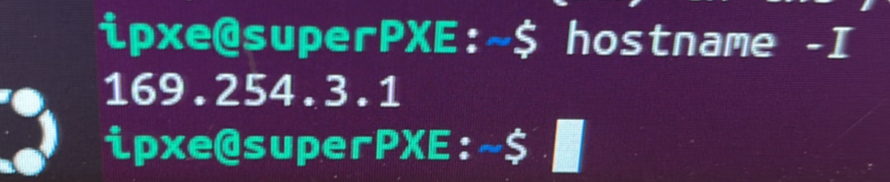
We proceed the ste down the interfaces that Intel wanted down and to not be used:
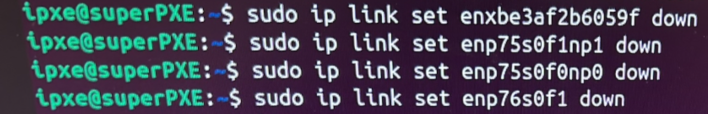
ip a shows their state as down:
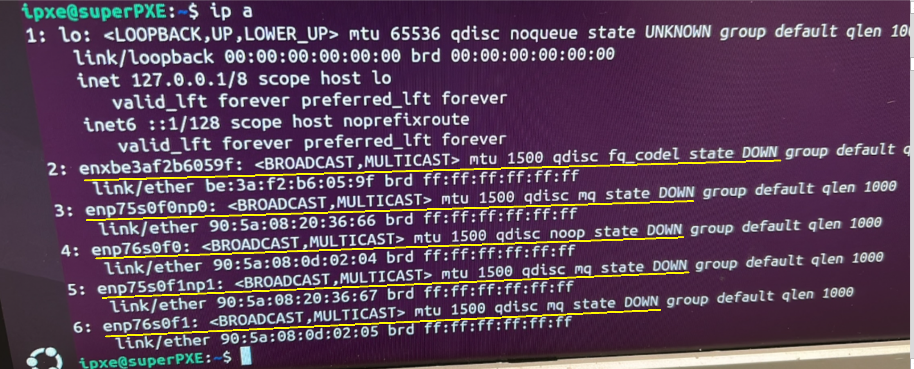
We then set enp76s0f0 to up. ip a confirms our command worked:
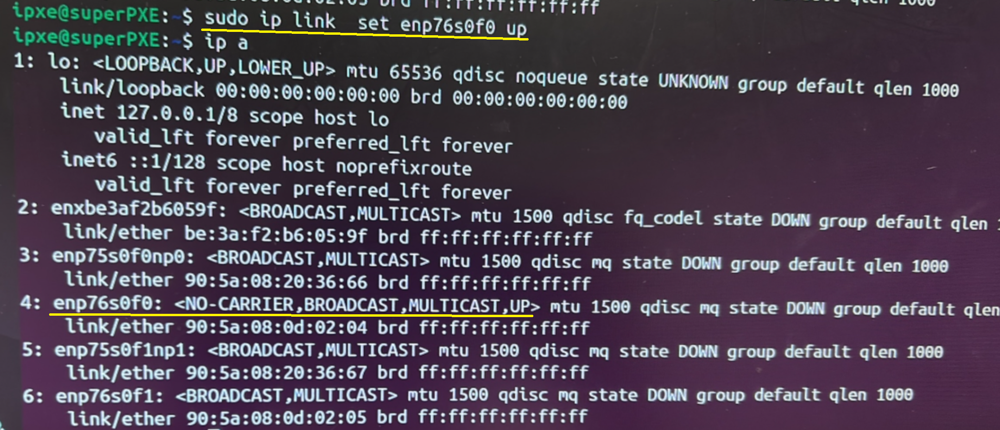
We give enp76s0f0 the intended Ip address:
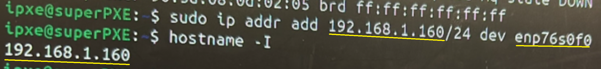
We confirm that our intended interface is up and with the IP we wanted:
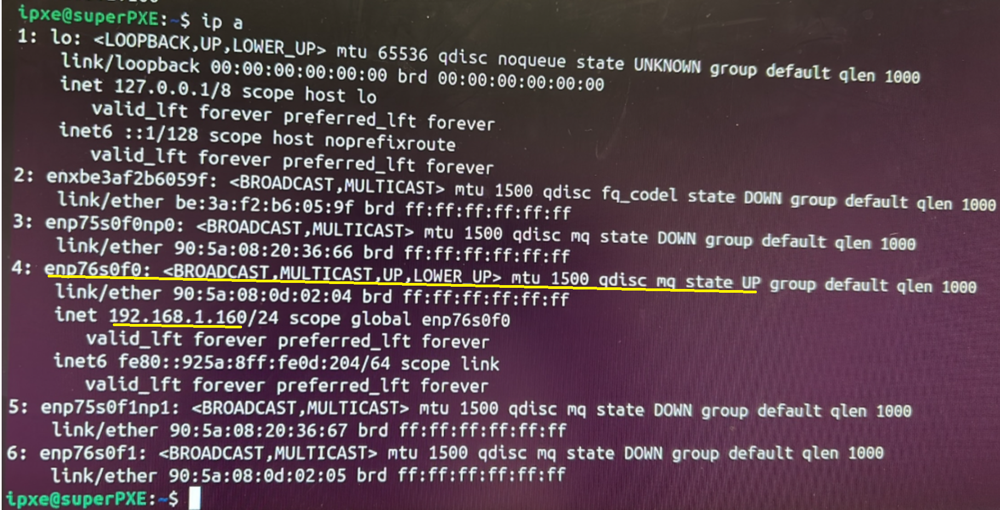
We stop dnsmasq and remove all previous leases:
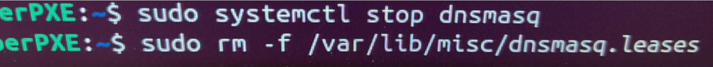
We make sure the leases are at zero:
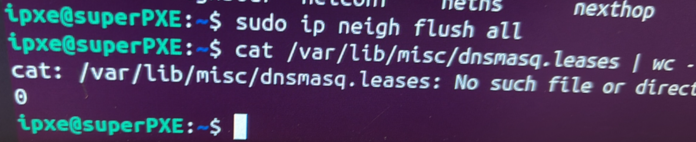
We enable DHCP:
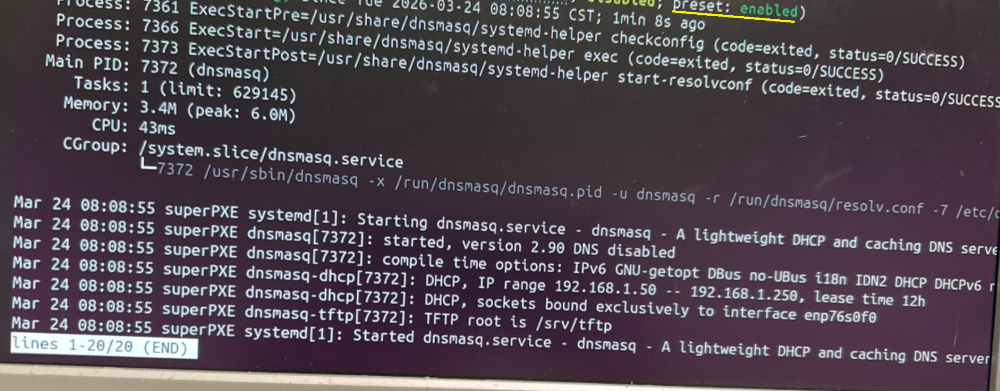
Leases are at zero, and we reseat switches, CMMs, servers, etc, so they start getting an IP address:
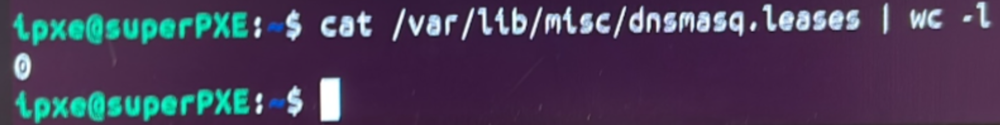
First leases is assigned:
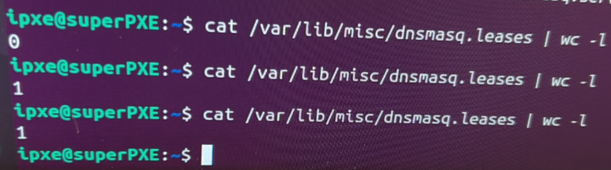
More leases are assigned to more mac addresses:
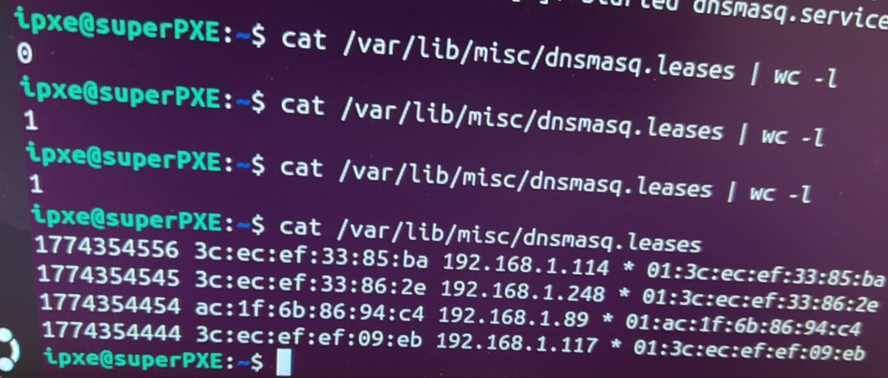
ip a looks great:
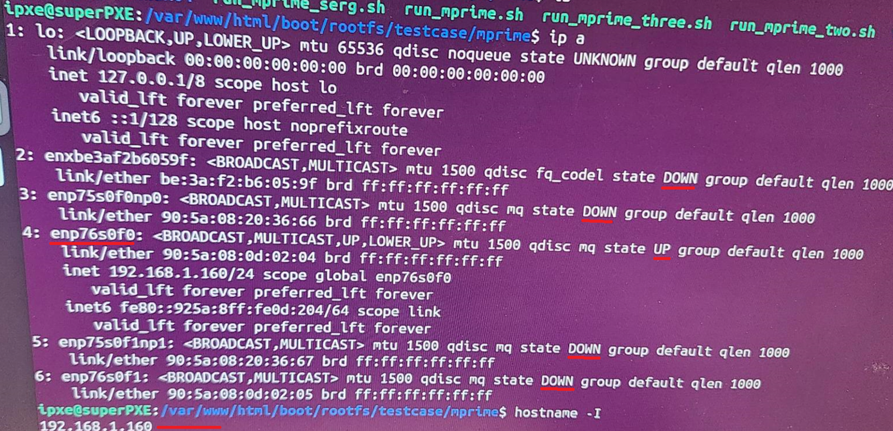
I connect a server to the PXE server network, and see if it PXE boots. It does:
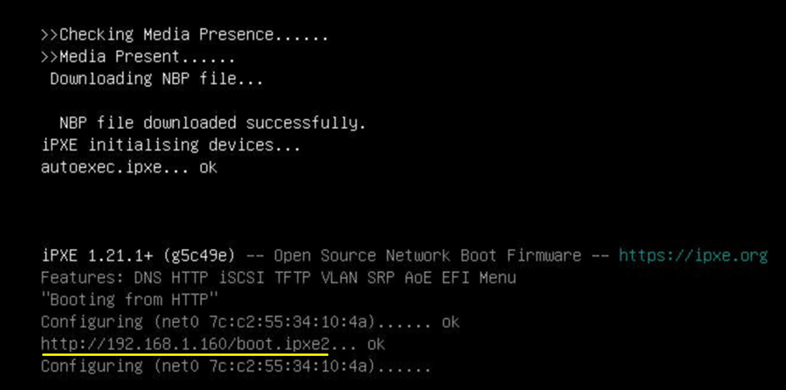
That server reaches the inteded PXE boot menu:
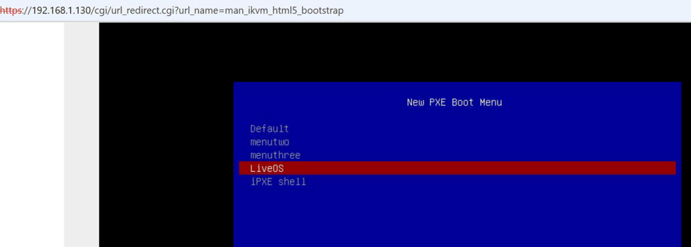
Previously, there was an issue with leases reaching a limit of 99:
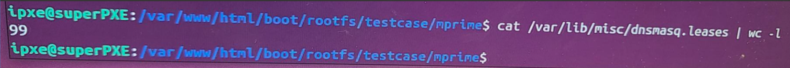
We expand the pool to 200 (inclusive of PXE's own IP):
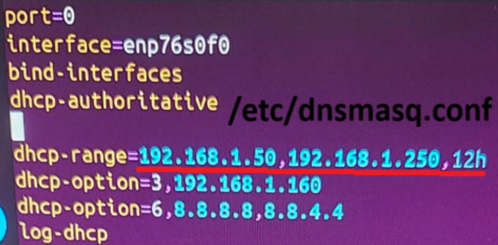
Many more leases are given!
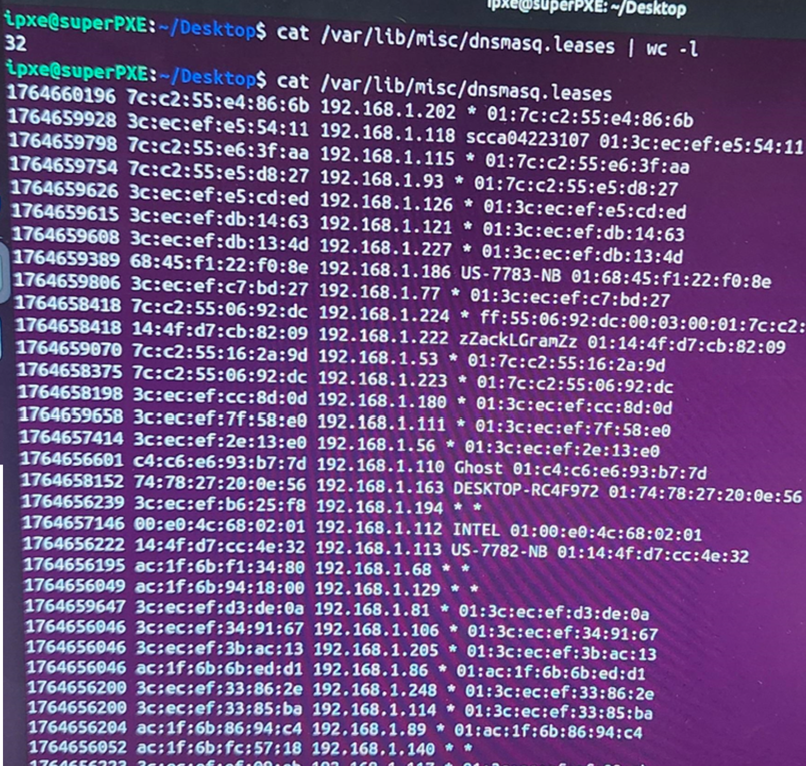
That's it! Thanks for reading!